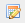
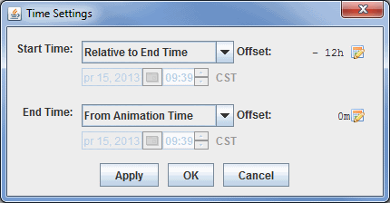

The Trajectory Colored By Parameter display type is capable of working with gridded data containing u and v-wind components, as well as a scalar quantity to color them by. You can create both 2D and 3D trajectories dependent on what is contained in your data. To use this display type, you can use the grid formulas Grid 2D Trajectory or Grid 3D Trajectory. These formulas will request for your scalar quantity, as well as individual u and v-wind fields. An alternative to the formulas is utilizing the new derived 2D and 3D fields of your data, Grid 2D Trajectory and Grid 3D Trajectory. When using these fields, all you need to specify is the scalar quantity, and McIDAS-V will pull out the relevant u and v-wind components (as well as the vertical component when creating 3D Trajectories).
After clicking Create Display and choosing your field(s), you will arrive at the Layer Controls tab of the Data Explorer, where you will define the properties of your trajectories.
Image 1: Grid Trajectories Layer Controls
- Levels - Sets the vertical level where your trajectories will originate.
- Trajectory Initial Area - Allows you to determine where your trajectories will originate from. While the trajectories originate at these locations, they are not bounded by the Trajectory Initial Area. They can extend beyond these boundaries up to the geographical extent of your data. You can draw multiple different Trajectory Initial Areas of the same type, but you cannot mix different types:
- Points - Plots individual points on the Main Display where the trajectories will originate from.
- ClosePolygon - Allows you to click and drag in the Main Display window to draw a shape around any desired area. The trajectories will originate from everywhere inside of the shape. By default, they will be spaced apart at the resolution of the grid.
- Rectangle - Allows you to click and drag in the Main Display window to draw a rectangle around any desired area. The trajectories will originate from everywhere inside of the shape. By default, they will be spaced apart at the resolution of the grid.
- Initial Area Skip Factor - Sets the skip factor of the trajectories. This is an option when using ClosePolygon and Rectangle Trajectory Initial Areas. By default, this value is 1.0, meaning that the trajectories will be spaced by the model resolution. You can change this number by typing a value into the field and pressing Enter, or by using the slider. Raising this value will result in fewer trajectories being drawn in your display.
- Backward trajectory - Creates backward trajectories instead of the default, which is forward trajectories.
 - Creates your trajectories utilizing the information provided in the Level, Trajectory Initial Area, and Initial Area Skip Factor fields. These trajectories will be displayed in the Main Display window.
- Creates your trajectories utilizing the information provided in the Level, Trajectory Initial Area, and Initial Area Skip Factor fields. These trajectories will be displayed in the Main Display window. Remove existing glyphs and trajectories - Removes any trajectories and trajectory initial areas from the Main Display window.
Remove existing glyphs and trajectories - Removes any trajectories and trajectory initial areas from the Main Display window.
Once you click  to create your trajectories, the options in the Layer Controls will expand to include more controls. This is composed of two tabs: Layout, and Times.
to create your trajectories, the options in the Layer Controls will expand to include more controls. This is composed of two tabs: Layout, and Times.
The Layout tab allows you to set various aesthetic aspects of your display:
Image 2: Grid Trajectories Layout Tab
- Color Table - Shows the active color table and the associated high and low data values in the units of the display. As the mouse pointer is moved over the color bar, the value at a particular color is shown. Right click on the color bar or click on the button that displays the name of the Color Table to make modifications to the color bar. This allows you to open the Color Table Editor, change the range, select other color tables, etc. This option sets the color of the trajectories drawn in the Main Display window.
- Visible Range - Determines what parts of the data is actually shown. Click the
 button to set the range of data shown. Once the checkbox is checked, the Visible Range will be applied to the data in the Main Display window. The current visible range is listed next to From:.
button to set the range of data shown. Once the checkbox is checked, the Visible Range will be applied to the data in the Main Display window. The current visible range is listed next to From:. - Line Width - Sets the thickness of the trajectory lines in the Main Display window. You can change this value by typing a value into the field and pressing Enter, or by using the slider. The default value here is 1.0.
The Times tab allows you to determine how many times are included with each trajectory.
Image 3: Grid Trajectories Times Tab
- Times to Use - Sets if you are using Nominal Time or Track Times to display your data. You can use Show Every and Enabled to limit the number of time steps in your loop. For example, if you are using 6-hourly data, you can use a Show Every value of 720 minutes, enable it, and your time steps will be cut in half.
- Nominal Time - Displays the entire length of all trajectories in one time step. This will not allow for a loop of data.
- Track Times - Displays the parcel trajectories in a series of time steps, allowing you to easily see how the parcel moves through time in a loop. This is the default option for Times to Use.
- Time Mode - Allows you to control how much of each trajectory is shown at each time step. By default, the entire length of each trajectory is shown, which can lead to a cluttered display if you are working with a lot of trajectories. An example use of this is when working with 6-hourly data, and you set each trajectory to use 12-hours worth of data, meaning two time steps in each trajectory. To set Time Mode, click the
 button to get to the Time Settings window:

Image 4: Time Settings WindowThis time setting is different than that used for the general Define Animation Times tab of the Time Animation Widget since it has no influence on the number of time steps in the loop, but rather the amount of data shown at each time step. You can utilize various options for Start Time and End Time to determine how much of each trajectory will be shown at each time step.
- Start Time - Sets the first time used in the trajectory at each time step.
- Use First Time from Data - Begins the trajectories with the first time of the data.
- From Animation Time - Begins the trajectories at a time relative to the current animation time.
- Relative to End Time - Begins the trajectories at a time relative to the end time of the trajectory. Note that you must use offset to determine how far back from the end time you are starting.
- Fixed - Sets the start/end time to be a fixed time. Note that this must be a time included with your data.
- Offset - Sets the temporal offset (either positive or negative) from the value selected for Start Time and End Time. This option can be used with any of the provided choices for Start Time and End Time. The default is 0m, which means that the actual starting and ending times are what was selected.
Many of the menu items seen utilizing this display are standard options that can be found in the Menus section of the Layer Controls page. However, there are a couple of options unique to this display.
The File menu has these unique options:
- Export Drawing - Allows you to export your Trajectory Initial Area as a drawing file (*.xgrf). You can also select Load as map data, which will add your shape to the Field Selector. You can then load in this shape again in subsequent sessions using Import Drawing.
- Import Drawing - Allows you to import a drawing file (*.xgrf) which draws a Trajectory Initial Area. Once you import the drawing, you can click and trajectories will be drawn using this shape.